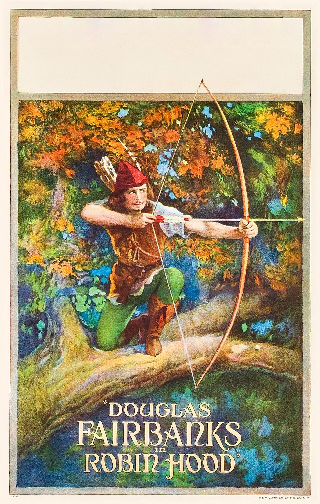
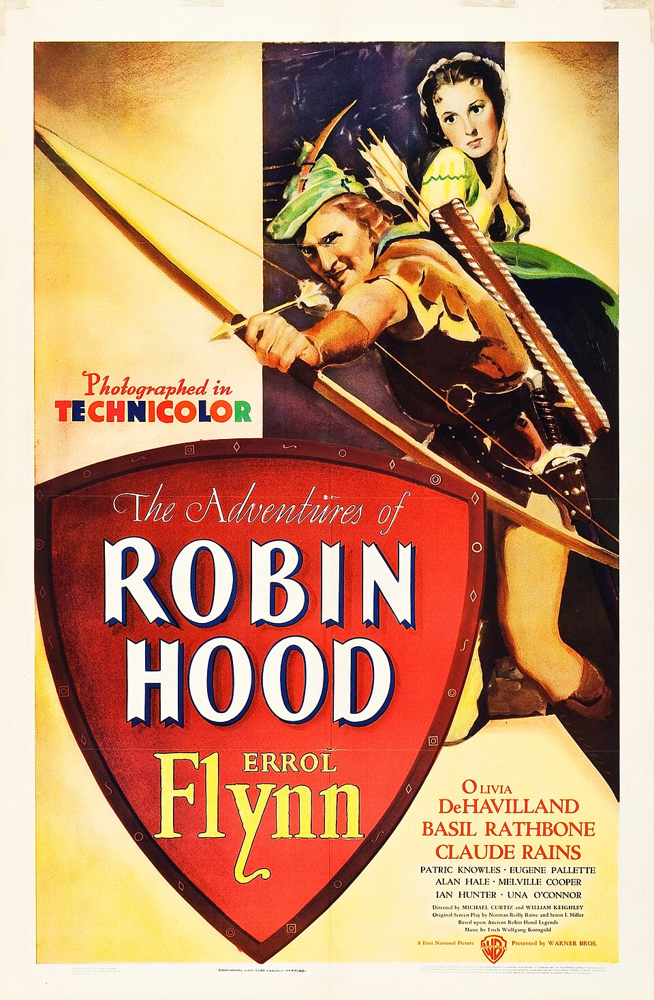
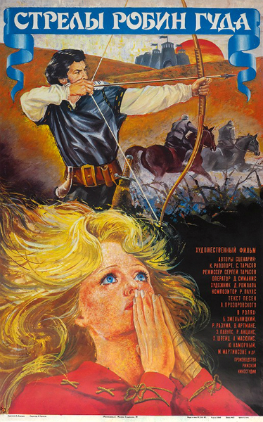
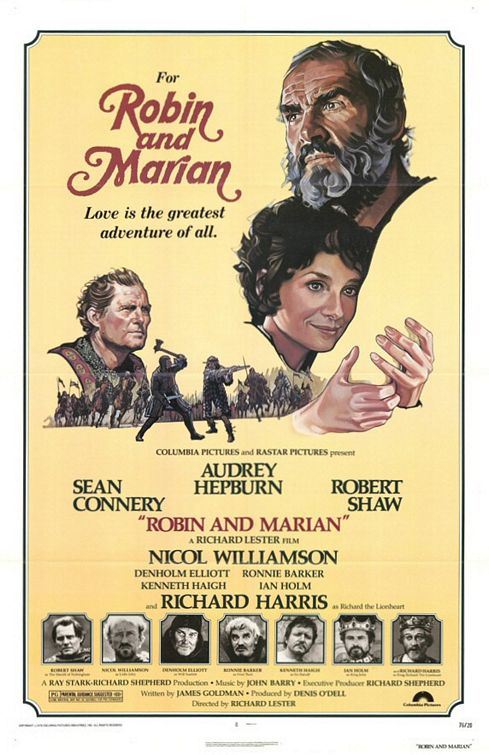
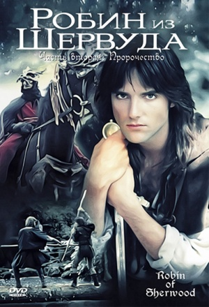
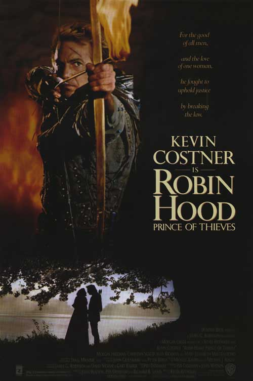
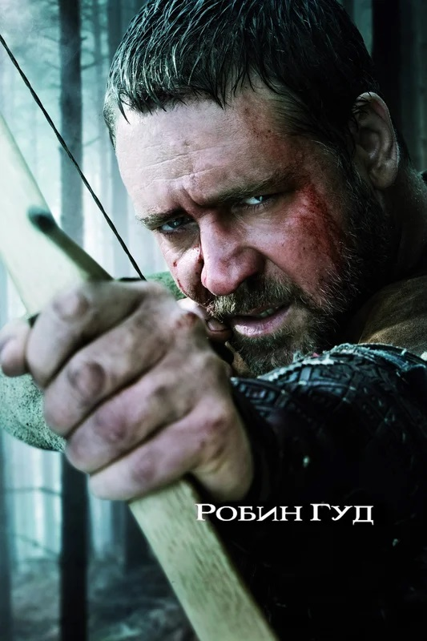
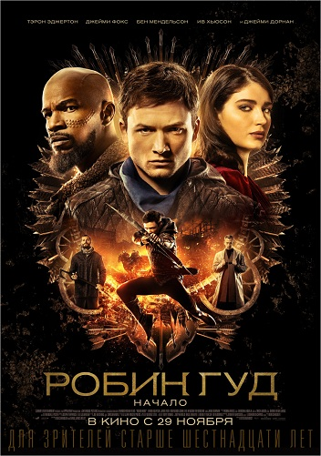
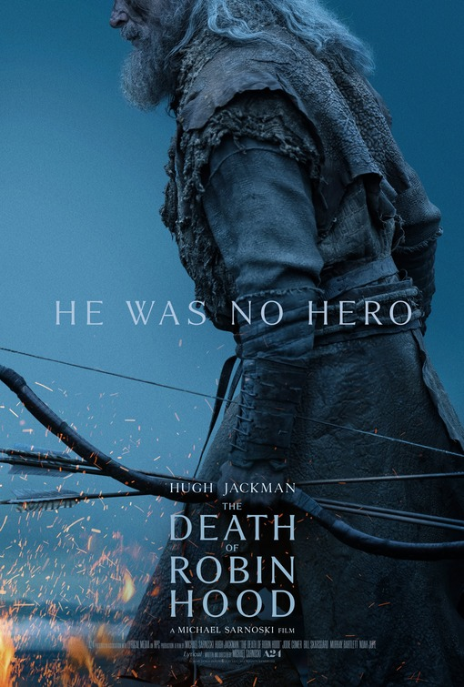

Экранизации истории о Робин Гуде
Классика Золотого века Голливуда и первые экранизации
-

«Робин Гуд» (1922) — первый грандиозный эпический фильм с Дугласом Фэрбенксом в главной роли, задавший стандарты приключенческого жанра.
-

«Приключения Робин Гуда» (1938) — эталонная картина с Эрролом Флинном, получившая три премии «Оскар» и считающаяся золотым стандартом классической истории.
Советская адаптация
-

«Стрелы Робин Гуда» (1975) — советский двухсерийный фильм Сергея Тарасова с Борисом Хмельницким в главной роли и песнями Владимира Высоцкого.
Поздняя классика и переосмысления XX века
-
.jpg)
«Робин Гуд» (мультфильм, 1973) — знаменитая анимационная версия от студии Disney, где герои представлены в виде антропоморфных животных (Робин Гуд — рыжий лис).
-

«Робин и Мэриан» (1976) — драма с Шоном Коннери и Одри Хепберн о постаревших героях, вернувшихся из крестовых походов.
-

«Робин из Шервуда» (сериал, 1984–1986) — культовый британский телесериал с мистическими мотивами и кельтской музыкой группы Clannad.
-

«Робин Гуд: Принц воров» (1991) — популярнейший блокбастер с Кевином Костнером и Аланом Рикманом в роли шерифа Ноттингема, а также знаменитой песней Брайана Адамса.
Современные экранизации
-

«Робин Гуд» (2010) — масштабная историческая драма Ридли Скотта с Расселом Кроу и Кейт Бланшетт.
-

«Робин Гуд: Начало» (2018) — динамичный голливудский экшен с Тэроном Эджертоном и Джейми Фоксом.
-

«Смерть Робин Гуда» (2026) — мрачное переосмысление легенды с Хью Джекманом и Джоди Комер в главных ролях.